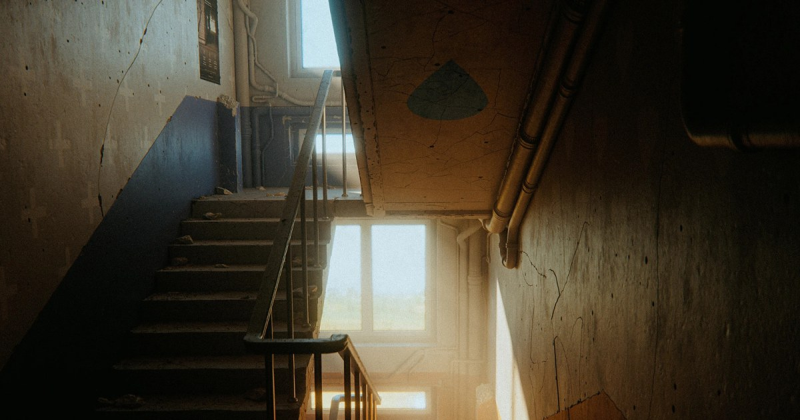

Edgy：Blender／Cinema 4D 以 Non-destructive Mesh Damage 直接改變輪廓
Edgy 會在封閉 mesh 的邊緣與表面切出實際破損，原始物件保留不變，破損在任何鏡頭距離與 renderer 都能影響 silhouette。

Modeling Tool ★★★★☆
完整分析
建模方式
與只貼 normal/height damage 不同，Edgy 直接建立幾何破損，所以遠近距離都能改變 silhouette，同時保留原 mesh 做非破壞迭代。
製作價值
重點是是否降低跨工具操作、重複建模或貼圖／輸出摩擦。
升版 / 導入測試
在專案副本驗版本、plugin、import/export、材質與批次相容性。